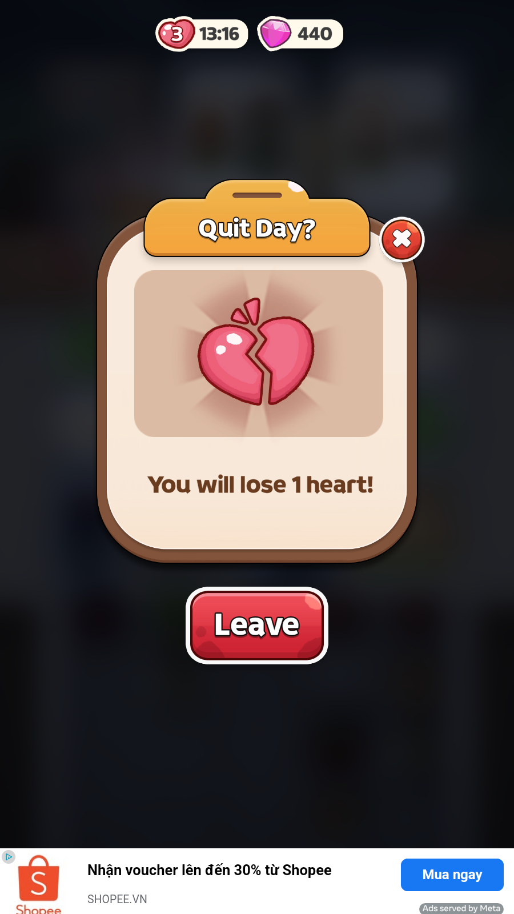
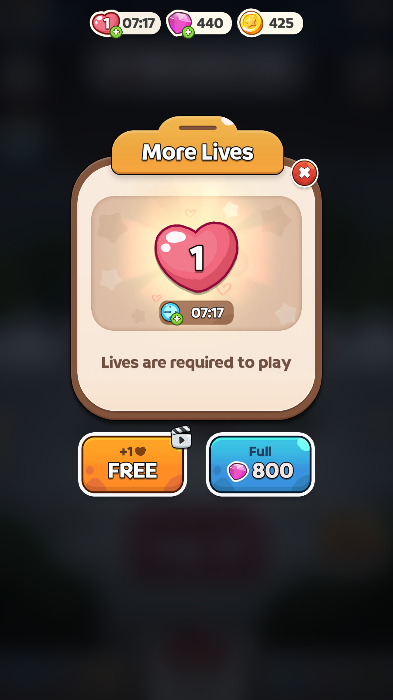
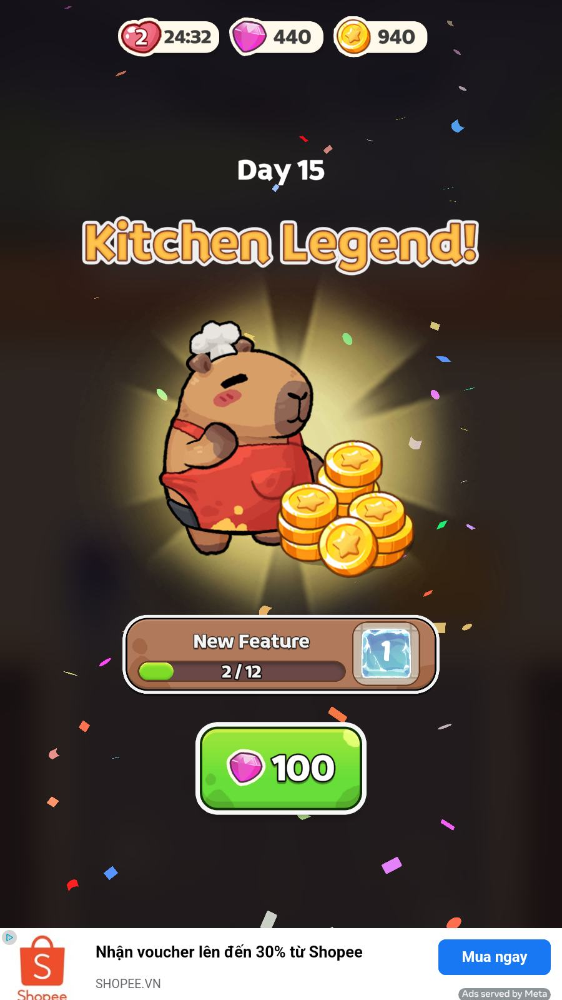
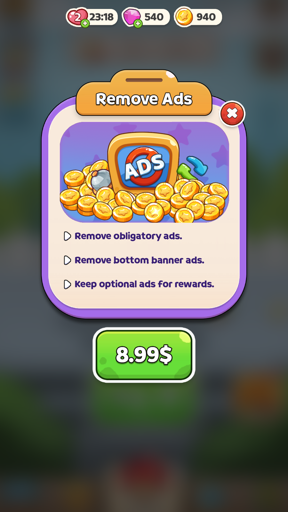
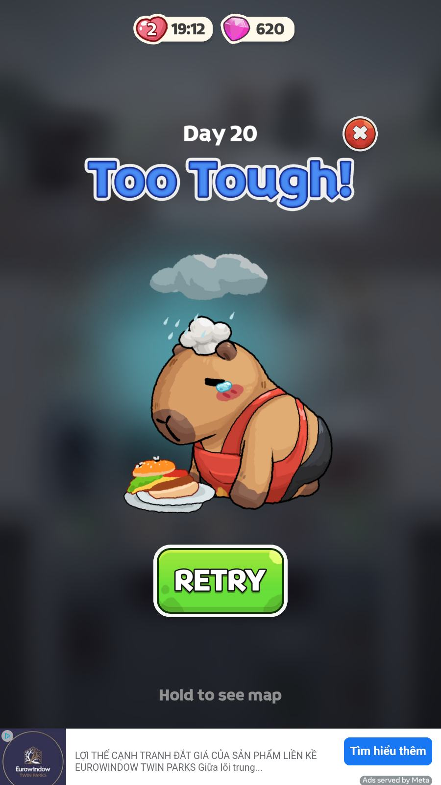

Sale & event: phân tích sâu
Mọi điểm chạm bán của Foodie Pop! 1.15 với con số và công thức chính xác, cách popup được điều phối, kinh tế từng sự kiện, và cái gì server đổi được.
Bài đi sâu từng điểm bán: cứu màn, booster, tim, tăng tốc, offer tự bật, popup sau màn, rồi kinh tế 7 sự kiện. Mỗi con số có nguồn (Client / Server / Đo trên máy) và một phép tính ví dụ. Đọc khoảng 20 phút; nên đọc bài cơ bản trước.
- ✅ Giá trị thật: lấy thẳng từ code, config server thật, save hoặc ảnh chụp khi chơi.
- 🧪 Ví dụ minh họa: con số đầu vào giả định để thấy cơ chế chạy; cách tính trong ví dụ là cách tính thật trong code.
- Tên kỹ thuật (class, method, key) để trong ngoặc hoặc ở dòng bằng chứng, để tra code khi cần.
Tóm tắt nhanh
- Giá cứu màn tăng theo lần trong cùng một màn, rồi về 900 ở màn sau. Công thức
saveMePrices[min(n, 2)].Ví dụ 🧪 Cứu 3 lần trong Day 15 = 900 + 1 800 + 2 400 = 5 100 gem, nhiều hơn gói 5 000 gem (8,99 $). Sang Day 16, lần cứu đầu lại là 900. - Fail Offer chứa đúng 3 lần cứu. 2 700 gem = 3 x 900, cộng 4 booster, giá 5,99 $; hiện trong mọi popup Out of Slots từ Day 10.Ví dụ ✅ Day 15 và Day 20: thẻ “Best” 2 700 gem + Tongs, Swap Row, Auto Cook, Stack Box mỗi cái x1, nằm ngay dưới nút 900 gem.
- Gói booster x3 rẻ hơn mua lẻ, trừ Swap Row. Tongs, Auto Cook tiết kiệm 200 gem; Stack Box tiết kiệm 300 gem; Swap Row lại đắt hơn 100 gem.Ví dụ ✅ Swap Row lẻ 500 gem → 3 cái = 1 500 gem; gói x3 = 1 600 gem.
- Popup Remove Ads đếm theo phiên. Bật sau inter đầu tiên của phiên, rồi mỗi 5 inter; mở lại app là đếm lại từ đầu.Ví dụ ✅ 20:38 (inter 1 của phiên 1) và 20:53 (inter 1 của phiên 2, sau khi phải tắt app vì quảng cáo không có nút X).
- Nút “100 gem” ở Day 15 không phải quảng cáo thưởng. 100 gem là thưởng thắng Super Hard; quảng cáo sau đó là inter đầu tiên (mốc Day 15).Ví dụ ✅ Bấm 20:37:06,97 → bộ đếm inter của Segment ghi 20:37:08; save có đúng 5 mốc inter cho 5 màn thắng Day 15–19.
- Sự kiện thưởng theo độ khó và ngày càng hào phóng ở mốc cuối. Pass 977 điểm cho 3 500 gem (vé) + 1 000 gem (Free); Streak bước cuối 5 000 gem; Tower đỉnh 1 000 gem.Ví dụ 🧪 Pass cần khoảng 540–570 màn thắng / tháng nếu tỉ lệ màn thường / Hard / Super Hard là 70–73 / 18–20 / 9–10 phần trăm.
- Server đổi được giá, không đổi được luật bán. Giá cứu, booster, tim, tăng tốc, nội dung gói có key RC; điều kiện offer, thưởng sự kiện, mốc Stage Race nằm trong asset.Ví dụ ✅ Muốn bật lại
starter_salephải sửaShopOfferRules.asset(cờdisabled) và ra bản mới.
Ví dụ xuyên suốt: Day 15 Super Hard, 5 lần vào màn và mọi điểm bán gặp phải
✅ Playtest 16/11, giờ máy. Trước Day 15: 5 tim, 440 gem, 425 coin, Tongs 2, Swap Row 1, Auto Cook 0, quỹ 2x 300 giây. Chưa từng mua IAP. Cột cuối có thêm phép tính 🧪 “nếu người chơi trả tiền”.
| Lúc | Người chơi làm gì | Game phản hồi | Kết quả / số dư |
|---|---|---|---|
| 20:01:27 | Bấm nút đỏ “Super Hard / Day 15” | Banner SUPER HARD DAY!, giữ 1 tim; 12 khách, 4 dụng cụ, lưới 5 cột có ô “?” | Tim 5 (1 đang giữ), 440 gem |
| 20:04:26 | Lưới chuẩn bị 10/10, bấm Tongs | Banner đỏ “Out of Slot!”; Tongs không có tác dụng khi lưới đầy và không bị trừ | Tongs vẫn 2 |
| 20:04:33 | - | Popup Out of Slots: “Move all ingredients into a bag?” 900 gem; thẻ Fail Offer 5,99 $ | 440 < 900. 🧪 Mua Fail Offer: 440 + 2 700 = 3 140 gem → cứu 900, còn 2 240 (đủ thêm lần 2 giá 1 800) |
| 20:04:45 | Bấm X | Màn thua “Kitchen Chaos!”, RETRY, “Hold to see map” | Tim 4, đồng hồ hồi 26:38 |
| 20:09:43 | Lần 2: bật 2x | Nút xanh, đếm ngược 04:59; quỹ dùng chung cả tài khoản, không reset mỗi màn | Quỹ 300 giây bắt đầu trôi |
| 20:10:26 | Dùng Swap Row (đưa hàng 2 lên đầu), vẫn đầy lưới | Popup cứu lần 2, giá vẫn 900 vì chưa trả lần nào trong màn | Swap Row 1 → 0; tim 3 sau khi đóng |
| 20:18:16 | Lần 3: lưới 10/10 nhưng không có popup (tưởng kẹt; game vẫn thấy patty lẻ đi được); Pause → Restart → “Quit Day?” → Leave | Thoát giữa màn mất 1 tim; module Segment không coi lần thoát là thua | Tim 2; một điểm bán bị mất vì người chơi không thấy nước đi còn lại |
| 20:23:25 | Lần 4 lại Out of Slots | Popup cứu lần 3 của Day 15; đóng → thua; trục kỹ năng chuyển Struggling (3 thua thật liên tiếp) | Tim 1 |
| 20:24:07 | Về Home, bấm + cạnh tim | More Lives: “+1 heart FREE” (video) hoặc “Full 800 gems” | Không mua. 🧪 Đầy tim từ 1 lên 5 tốn 800 gem = 200 gem / tim |
| 20:24:38–20:36:54 | Lần 5: dùng Tongs lấy món ở sâu | Thắng “Kitchen Legend!”, +515 coin; trục kỹ năng về Normal | Tongs 2 → 1; coin 940 |
| 20:37:07 | Bấm nút “100” | +100 gem (thưởng Super Hard) → inter thứ nhất (Mintegral) → Home → popup Remove Ads 8,99 $ | Gem 540. Day 15 tốn 4 tim, 36 phút, 0 đồng |
Một màn Super Hard tạo ra 3 popup cứu, 1 More Lives, 1 inter và 1 popup Remove Ads. 🧪 Người chơi muốn “trả tiền để qua ngay lần đầu” chỉ cần 900 gem: thiếu 460 gem → gói rẻ nhất 1 000 gem (1,99 $) hoặc Fail Offer (5,99 $, thừa cho 2 lần cứu nữa).






Ảnh chụp minh họa (5)
Ảnh chụp từ game thật. Bấm ảnh để phóng to, phím ← → để chuyển ảnh.


Luồng hoạt động (7 bước)
Tóm lại: lưới đầy / khách hết kiên nhẫn / băng kẹt → khoá thao tác → đọc cấu hình cứu → tính giá theo lần → popup (gem / video / free / item / Fail Offer) → cứu: chạy hiệu ứng riêng; từ chối: thua, mất tim
- 1Màn báo sắp thuaClientBa nguyên nhân: hết ô chuẩn bị, khách hết kiên nhẫn, băng chuyền kẹt. Game ghi lý do kết thúc (6 / 5 / 7) và khoá thao tác.Ví dụ ✅ Day 15 và Day 20 đều là Out of Slots (lý do 6, khoá 1003). Out of patience và Out of Move chưa gặp ở Day 13–20.
LevelSaveMeControl.HandleOutOfServeSlot / HandleCustomerOutOfTime / HandleBeltDeadlockMàn báo sắp thua - 2Kiểm có được mời cứu khôngClientTừ chối thẳng (thua ngay) nếu hàng cấu hình thiếu, chưa tới
lvUnlock, hoặc không có cách trả (numFree≤ 0, giá ≤ 0,maxAds≤ 0).Ví dụ ✅ Cả 3 hàngsave_me_configđều bật,lvUnlock0, giá 900,maxAds99 → luôn được mời.LevelSaveMeControl.ShowSaveMe / Refuse - 3Tính giá theo lầnClientGiá =
saveMePrices[min(số lần đã trả gem trong màn, 2)]. Đếm bằng bộ đếm booster của màn, nên sang màn mới về 900.Ví dụ 🧪 Lần 2 trong cùng màn: 1 800 gem; lần 5: vẫn 2 400 gem.BoosterAndSaveMeRemoteConfig.GetSaveMePrice; booster_pack_config - 4Hiện popup với các lối trảClientNút gem (ẩn nếu có item cứu trong kho), nút video (nếu
canUseAds), nút Free (nếu còn lượt), thẻ Fail Offer (nhómfailoffer). Giữ tay ngoài popup để xem bàn chơi.Ví dụ ✅ Playtest chỉ thấy nút 900 gem + Fail Offer, không thấy nút video dùmaxAds= 99 (điều kiệncanUseAdschưa đọc ra).UIPopupBoosterSaveMeBase.GetButtonVisibility; UIOfferPackInGame.ShowOfferHiện popup với các lối trả - 5Người chơi chọnPlayerGem: kiểm đủ, thiếu thì mở Shop. Video: rewarded
save_me. Fail Offer: mua IAP rồi hồi sinh ngay. X: thua.Ví dụ ✅ Day 20: có 620 gem < 900 → nút gem sẽ mở Shop (không bấm theo luật an toàn).OnClickButtonSaveMeHardCurrency; UICakePopupSaveMe.OnShownPackBought
Người chơi chọn - 6Cứu thành côngClientMỗi loại có hiệu ứng riêng: gom nguyên liệu trong lưới vào một cái túi (mới ở 1.15), hồi đầy thanh chờ của khách, hoặc xoay món dùng được ra hàng đầu.Ví dụ 🧪 Cứu Out of Slots khi lưới 10/10 → lưới trống, 10 món nằm trong túi và tự về quầy khi khớp đơn.
GridIngController.ApplySaveMeClearAndCollect; ServeShelfController.TryMergeFromSaveMeBag - 7Từ chối: thuaPlayerGhi tracking
decline, kết thúc màn, tim đang giữ bị mất. Sự kiện Streak có thể chen một panel giữ chuỗi trước khi thua.Ví dụ ✅ Day 20: đóng popup → “Too Tough!”, tim 3 → 2.LevelSaveMeControl.Lose; DreamyStreakLosePanel.OnBeforeGiveUp
Từ chối: thua

Nhánh & ngoại lệ
| Khi | Thì | Ví dụ | Bằng chứng |
|---|---|---|---|
| Đủ gem | Trừ gem, nguồn chi hard_currency, màn chạy tiếp, lần sau trong màn giá tăng bậc. | 🧪 Có 3 140 gem (sau khi mua Fail Offer): cứu 900 → còn 2 240; cứu tiếp 1 800 → còn 440. | BoosterCounter.countBoosterByHardCurrency |
| Thiếu gem | Báo thiếu gem và mở Shop; popup cứu vẫn chờ. Nhánh flash sale gem gem1_sale (cửa sổ 6 giờ, nghỉ 3 ngày) có code nhưng đang tắt. | ✅ 620 gem ở Day 20 → Shop; gói gần nhất 1 000 gem 1,99 $. | InAppShopDataAccess.NotifyGemShortage; ShopOfferRules.OpenGemShortageSales |
| Có item cứu trong kho | Nút gem bị ẩn, thay bằng nút dùng item (nguồn inventory). | 🧪 Server phát 1 item cứu qua quà → lần thua sau không thấy giá 900. | UIPopupBoosterSaveMeBase.GetButtonVisibility |
Server đặt numFree > 0 | Hiện nút Free; mỗi loại cứu đếm riêng (FreeSaveMe_<loại>). | 🧪 saveme_out_slot;1;0;1;900;99 → mỗi tài khoản được cứu Out of Slots miễn phí 1 lần. | save_me_config (numFree) |
| Đang có chuỗi Dreamy Streak | Bấm X không thua ngay: panel giữ chuỗi có thể chen vào trước. | 🧪 Chuỗi 6 thắng ở Day 45, thua → panel nhắc mất chuỗi, đặt cạnh nút cứu. | DreamyStreakLosePanel.OnBeforeGiveUp |
| Lưới đầy nhưng hàng đầu băng còn ít nhất 1 ô đi được | Game không đếm Out of Slots, chỉ nháy viền đỏ và chờ. Không có gợi ý nếu có từ 2 ô đi được; người chơi không tìm ra thì tưởng kẹt và thoát bằng Pause (mất tim). | ✅ Day 15 lần 3 (khoảng 20:15–20:18): patty x1 ở cột 4 và 5 vẫn đi được, người chơi chỉ chạm patty x2 và hành x3 (bị từ chối). | ConveyorStuckAlert.HasAnyMove, GridIngController.TickFullAlert; Docs/research/day15-softlock.md |
1. Điểm chạm bán trong màn
Tóm lại: mỗi chỗ kẹt có một nút gem, một nút video và (với cứu màn) một gói IAP

| Điểm bán | Gặp khi nào | Giá / lượng | Ví dụ cụ thể | Số liệu do |
|---|---|---|---|---|
| Cứu Out of Slots | Lưới chuẩn bị đầy, không còn nước đi | 900 / 1 800 / 2 400 gem theo lần trong màn; video (maxAds 99); Free 0 | ✅ Day 15: 3 popup, mỗi lần 900 vì chưa trả lần nào | Client (save_me_config, booster_pack_config) |
| Cứu Out of patience | Một khách hết thanh chờ | Như trên, hiệu ứng: hồi đầy thời gian chờ | Chưa gặp ở Day 13–20 (màn chưa có đồng hồ khách) | Client |
| Cứu Out of Move | Băng chuyền kẹt, hàng đầu không lấy được gì | Như trên, hiệu ứng: “Shuffle the ingredients?” | Chưa gặp ở Day 13–20 | Client |
| Fail Offer | Trong popup cứu, từ Day 10 | 5,99 $ = 2 700 gem + 4 booster x1, hồi sinh ngay | ✅ Thẻ nhãn “Best” ở cả 4 popup cứu | Đo trên máy + Client |
| Booster hết | Bấm nút “+” trên booster | Lẻ: Tongs 600, Swap Row 500, Auto Cook 600, Stack Box 700 gem; gói x3: 1 600 / 1 600 / 1 600 / 1 800 gem; hoặc 1 video | 🧪 Hết Stack Box ở Day 20: gói 3 cái 1 800 gem = 600 / cái, rẻ hơn lẻ 100 gem / cái | Client (booster_config) |
| Tăng tốc 2x | Bấm 2x khi quỹ hết | 20 phút = 1 200 gem (60 gem / phút) hoặc 8 phút = 1 video | ✅ Quỹ tặng 300 giây; sau phiên còn 263 giây nên chưa thấy popup nạp | Client (speed_up_config) |
| More Lives | Hết tim mà bấm vào màn, hoặc bấm + cạnh tim | +1 tim = 1 video; đầy tim = 800 gem | 🧪 Còn 0 tim: 800 gem cho 5 tim = 160 gem / tim; còn 4 tim: 800 gem cho 1 tim | Client (heart_config) |
| Tim trong màn (tắt) | Mất tim trong màn khi sai đơn, cháy món, khách bỏ đi | Cứu “Recover 3 Hearts?” 500 gem | Config có, không có nơi gọi LostHeart: không chạy ở 1.15 | Client (ingame_heart_config) |
2. Hằng số & công thức kinh tế
Các số dưới đây là mặc định trong APK. Ngày 16/11 server không ghi đè key nào trong số này, nên đây cũng là số đang chạy thật.
| Hạng mục | Quy tắc | Ví dụ tính | Số liệu do |
|---|---|---|---|
| Gem khởi đầu | 900 một lần (claimed_init_hard_currency) | ✅ 900 gem = đúng 1 lần cứu | Client |
| Gem thắng màn | 20 / 60 / 100 theo Normal / Hard / Super Hard; level phụ x0,5 | ✅ Day 15 Super Hard: 440 → 540. 🧪 Level phụ thường: 10 gem | Client |
| Coin thắng màn | Tổng tiền khách trả trong màn (25–55 coin / khách) | ✅ Day 13: +375 coin; Day 19: +190 coin | Đo trên máy |
| Giá cứu | saveMePrices[min(n, 2)] = 900 / 1 800 / 2 400, reset mỗi màn | 🧪 Cứu 2 lần một màn = 2 700 gem = đúng nội dung Fail Offer | Client |
| Booster | Lẻ 600 / 500 / 600 / 700; gói x3 1 600 / 1 600 / 1 600 / 1 800 | ✅ Tiết kiệm khi mua gói: 200 / -100 / 200 / 300 gem | Client |
| Tim | Tối đa 5; hồi 1 / 1 800 giây theo giờ online; giữ khi vào màn, trả khi thắng | 🧪 Hết sạch tim lúc 21:17 → đầy lại sau 2 giờ 30 phút | Client |
| Đầy tim | 800 gem bất kể đang còn bao nhiêu tim | 🧪 Còn 4 tim mà vẫn trả 800 là phí; chỉ đáng khi còn 0–1 tim | Client |
| Tăng tốc | Quỹ giây trừ theo đồng hồ thật khi 2x bật; 300 giây tặng; nạp 1 200 giây = 1 200 gem hoặc 480 giây = 1 video | ✅ Phiên 16/11 dùng 37 giây (300 → 263) | Client |
| Tim vô hạn trong gói | Starter 60, No Ads Bundle 120, Apprentice 180, Commis 360, Sous 720, Master 1 080, Legendary 1 440 phút | 🧪 Mua Commis lúc 20:00 → không mất tim tới 02:00 | Client (iap_shop_config) |
| Daily Rewards | Ô 1 miễn phí (50 gem ngày chẵn / tim vô hạn 15 phút ngày lẻ) + 4 ô video tuần tự 100 / 150 / tim 15 phút / 200 gem; reset nửa đêm | ✅ Ngày chẵn xem đủ 4 video: 500 gem | Client |
| Daily Gift 7 ngày | Một vòng duy nhất: 50 gem, Tongs, 100 gem, Swap Row, 150 gem, Auto Cook, bộ 3 booster | ✅ Cả chuỗi: 300 gem + 6 booster | Client |
| Mốc Journey | Level 5 / 10: 100 coin; 15: 150 coin + 50 gem; 35 và 50: 200 coin + 50 gem | 🧪 Tới level 50 nhận 150 gem từ Journey | Client (journey_milestone_config) |
| Bù coin map đầu | Thiếu coin tới mốc nhà hàng thì cộng phần thiếu + 150 | 🧪 Thiếu 2 000 coin → nhận 2 150 coin một lần | Client |
| Điểm sự kiện | Weekly, Pass, Team Treasure: 1 / 3 / 5 mỗi màn thắng theo độ khó | ✅ Weekly 16/11: 6 x 1 + 5 = 11 điểm | Client |
3. Offer tự bật: luật ShopOfferRules
Tóm lại: mỗi nhóm duyệt ứng viên theo thứ tự → bỏ qua disabled → ứng viên đầu tiên thoả mọi điều kiện thắng → nhóm keepOnceShown nhớ gói đã hiện
11 loại điều kiện: MinLevel, MinDaysSinceFirstOpen, MinDaysOpened, PassedInterAdsLevel, HasAnyIap, Owned, MinPurchaseCount, WithinDaysOfLastPurchase, MinLevelsSinceLastIap, FlashSaleActive, FlashSaleOnGemShortage. Luật nằm trong asset ShopOfferRules.asset (không có key RC).
_sale và bậc revivepack 2 / 3 đều disabled: 1: cả hệ thống bậc thang giá đã code nhưng chưa bật.| Nhóm | Ứng viên (thứ tự) | Trạng thái | Điều kiện | Ví dụ |
|---|---|---|---|---|
| noads | removeads_sale → removeads | sale TẮT; removeads bật | sale: đã mở app ≥ 7 ngày, chưa sở hữu No Ads; thường: level ≥ 10 | ✅ Popup Remove Ads 8,99 $ sau inter (Day 15, 17) |
| noadsbundle | removeads_bundle | bật | Level ≥ 10 | ✅ Thẻ đầu Shop: No Ads Bundle 11,99 $ |
| starter | starter_sale → starter | sale TẮT; starter bật, nhớ gói đã hiện | sale: ≥ 5 ngày từ lần mở đầu, chưa mua IAP; thường: level ≥ 20, chưa từng mua IAP, chưa sở hữu starter / starter_sale | ✅ Day 20: nút quà hồng 4,99 $; save shop.offerShown.starter = starter |
| gem1 | gem1_sale → gem1 | sale TẮT | sale: ≥ 3 ngày, chưa mua IAP, đang thiếu gem (cửa sổ 6 giờ, nghỉ 3 ngày) | 🧪 Nếu bật: bấm cứu 900 khi có 620 → mở gói 1 000 gem giá sale trong 6 giờ |
| failoffer | revivepack_sale (2 dòng) → revivepack3 → revivepack2 → revivepack | chỉ revivepack bật | revivepack3: level ≥ 50, đã mua ≥ 8 revivepack trong 2 ngày gần nhất; revivepack2: ≥ 3 lần; revivepack: level ≥ 10 | 🧪 Nếu bật: người mua Fail Offer lần thứ 3 trong 2 ngày được mời gói 4 500 gem + booster x2 |
| booster | boosterpack2 → boosterpack | bật | boosterpack2 khi đã mua booster pack trong 3 ngày; còn lại boosterpack | 🧪 Mua boosterpack hôm nay → lần sau thấy boosterpack2 (2 000 gem + booster x2) |
4. Điều phối popup: sau màn và ở Home
Tóm lại: thắng → nút nhận → inter (nếu qua cổng) → Loading → Home: bù coin → what's new → nhắc cập nhật → hướng dẫn → (chờ 1 s) Daily Gift lần đầu → Remove Ads → hỏi đánh giá → R1 giới thiệu sự kiện


| Bước | Popup | Điều kiện | Ví dụ | Số liệu do |
|---|---|---|---|---|
| Trong màn, lúc vào | New Booster + hướng dẫn ép dùng | Tới Day mở booster | ✅ Day 16: Stack Box x2, “Try using this booster!” | Client |
| Màn thắng | Chỉ một nút nhận gem | BLD tắt nút nhân gem bằng video (isWinBonusRewardDisabled = 1) | ✅ Day 13: BACK và chạm chỗ trống không làm gì | Client |
| Sau nút nhận | Interstitial | 6 cổng (Day ≥ 15, cap 180 s, chưa mua IAP trong phiên…) | ✅ Day 15–19: 5 inter | Client |
| Home 0 | Bù coin (không popup) | Map đầu, thiếu coin tới mốc nhà hàng | Chưa thấy (chưa tới Day 30) | Client |
| Home 1–3 | What's new, nhắc cập nhật store, hướng dẫn nâng cấp | Có notice chưa xem / new_version_popup.isShow = 1 / chưa xong hướng dẫn | ✅ Live: new_version_popup = 1.17, isShow 0 → không hiện | Client + Server |
| Home 4 | Daily Gift 7 ngày | Chỉ tự mở lần đầu | ✅ Day 13: không tự mở (đã mở trước đó) | Client |
| Home 5 | Remove Ads | Không có popup khác đang mở và còn “lượt” (xem mục 5) | ✅ 20:38 và 20:53 | Client |
| Home 6 | Hỏi đánh giá | Level ≥ 11, chưa đánh giá | Không thấy trong phiên (đã qua lượt hoặc chưa đến lượt) | Client |
| Home 7 | Giới thiệu sự kiện R1 | Sự kiện vừa mở khoá, chờ mọi popup đóng | Day 13–20 chưa có | Client |
| Nút nổi (không tự bật) | Starter Pack, Remove Ads, Daily Rewards, Daily Gift | Theo nhóm offer và LiveOpsButtonUnlockConfig (Starter từ 3, còn lại 0) | ✅ Day 20: Starter là nút quà hồng có dấu !, người chơi tự bấm | Client |
5. Công thức “lượt” popup Remove Ads
Tóm lại: đếm inter trong phiên → lần đầu khi đếm ≥ AfterInter → các lần sau khi đã thêm ≥ EveryInter inter → mở lại app thì đếm lại
- Hai bộ đếm sống trong bộ nhớ của phiên.
CountInterShownInSessionvà_countInterAtLastRemoveAdsPopup(khởi tạo -1 mỗi lần mở app).Ví dụ ✅ CodeAdsManager.TryConsumeRemoveAdsPopupTurn: đếm = -1 thì bật khi số inter ≥removeAdsPopupAfterInter; ngược lại bật khi số inter mới ≥removeAdsPopupEveryInter. - BLD: sau inter thứ 1, 6, 11… của mỗi phiên. AdsROAS và IAP đặt 0 / 0 nên không tự bật.Ví dụ ✅ Phiên 1: inter Day 15 (thứ 1) → popup; inter Day 16 (thứ 2) → không. Phiên 2 (sau khi tắt app): inter Day 17 (thứ 1) → popup; Day 18, 19 → không.
capShowOffer1 800 giây không chặn đường này. Hai popup chỉ cách nhau 15 phút (suy luận: cap củaremove_ads_configdùng cho nhánh khác hoặc không lưu qua phiên).Ví dụ ✅ 20:38:08 và 20:53:21.- Tác dụng phụ: quảng cáo kẹt làm popup bán lặp lại. Người chơi tắt app vì playable không có nút X → phiên mới → inter đầu → lại popup Remove Ads.Ví dụ ✅ Đúng chuỗi Day 16 → tắt app → Day 17 → popup lần 2.
6. Kinh tế từng sự kiện
Tóm lại: Day mở → chu kỳ → nguồn tiến độ → tổng thưởng → điểm tiền
| Sự kiện | Mở / chu kỳ | Tiến độ | Thưởng (tổng gem) | Ví dụ tính | Số liệu do |
|---|---|---|---|---|---|
| Weekly Contest | Day 10; tuần UTC, đổi thứ Hai 00:00 | Nhóm 10 người; 1 / 3 / 5 điểm mỗi màn thắng | Hạng 1: 100 gem + 4 booster + 60 phút; hạng 2: 3 booster; hạng 3: 2 booster; hạng 4–10: không | ✅ Tuần 202647: người chơi 11 điểm hạng 4; hạng 1 có 28 điểm | Client (asset) + server ghép nhóm |
| Stage Race | Day 26 (hằng số, không RC; không chạy ở 1.15); 1 tuần | 3 chặng: thắng 3 / 5 / 7 màn trước bot. Bot i mất 500 + i x 10 giây / màn | Chặng 1: tim 15 phút + Tongs; chặng 2: Auto Cook + 1 Calm Customers (booster đang tắt) + 5 gem; chặng 3: 100 coin + Swap Row + Calm Customers + tim 60 phút | 🧪 Bot nhanh nhất cần 3 x 500 giây = 25 phút cho chặng 1; nhịp playtest 6–7 phút / màn → người chơi về đích sau khoảng 20 phút | Client |
| Dreamy Pass | Day 35 (RC level_unlock_dreamy_pass); theo tháng | 1 / 3 / 5 điểm mỗi màn; 31 mốc, tổng 977 điểm; điểm thừa vào Bonus Bank (5 / chìa, trần 3 000) | Free: 1 000 gem + tim, booster, tăng tốc; vé Pass (foodiepass, giá store): 3 500 gem + Frame, NameFx + tim tối đa +8 | 🧪 977 ÷ 1,72–1,8 điểm / màn ≈ 540–570 màn thắng / tháng (18–19 màn / ngày) | Client (asset), giá vé: server |
| Dreamy Streak | Day 41 (RC); 3,5 ngày | Thắng nối chuỗi, điểm mỗi thắng tăng theo độ dài chuỗi; thua mất chuỗi, giữ điểm | Bảng Colony (mặc định): 25 bước, 18 661 điểm, cuối 5 000 gem; bảng NPP / DH / W 20 bước chọn theo nhóm chi tiêu nếu RC bật | ✅ Save: rewardTable = 3 (Colony); bước 19 = 600 gem + tăng tốc 15 | Client, RC chọn bảng |
| Team Treasure | Day 51 (RC) + có đội; 3,5 ngày | Điểm cả đội 1 / 3 / 5 mỗi màn | Mốc 200: tim 15 phút + Tongs; 500: 3 booster; 800: 100 gem + 4 booster + 60 phút; top 1–3 trong đội: 1 booster | 🧪 Đội 20 người, mỗi người thắng 10 màn thường / mùa = 200 điểm → chỉ mở mốc 1 | Client |
| Dreamy Tower | Day 61 (RC, bản 1.11 là 31); 3,5 ngày | Thắng +1 tầng; thua về mốc an toàn 0 / 5 / 11 / 17 / 22 / 33 / 42 / 65; thoát app giữa màn = thua | 10 tầng có thưởng, tổng 1 850 gem; đỉnh 65: 1 000 gem + tim 30 phút + 4 booster | 🧪 Đang ở tầng 40, thua → về tầng 33; cần thắng 25 màn liền từ 40 lên 65 mà không thua lần nào | Client |
| Event Sale | Day 35 + khung ngày (RC event_sale_starttime / endtime, mặc định 20261001–20261101) | Không có tiến độ; popup 1 lần / ngày + icon đếm ngược; nút Buy All | Gói 1: 1 000 gem + Tongs + Auto Cook; gói 2: 3 000 gem + 6 booster; gói 3: 6 000 gem + 16 booster; gói 4: 10 000 gem + 24 booster | ✅ 16/11 sale đã hết hạn, save halloween2026 = 4 x false | Client mặc định, giá: store |
7. Server điều khiển gì, client cố định gì
Tóm lại: RC đổi được giá và nội dung gói; asset giữ luật offer và thưởng sự kiện; store giữ giá USD
| Hạng mục | Nơi lưu | Live 16/11 | Đổi cần bản mới? | Ví dụ |
|---|---|---|---|---|
| Nội dung 28 gói IAP | RC iap_shop_config (mặc định trong scene) | Không ghi đè | Không | 🧪 Tăng Legendary Chef lên 110 000 gem chỉ cần sửa 1 dòng |
| Giá USD | Google Play | Giá store | Không (sửa trên console) | ✅ Fail Offer 5,99 $ |
| Giá cứu, booster, gói x3 | RC save_me_config, booster_config, booster_pack_config | Không ghi đè | Không, nhưng ghép theo chỉ số mảng: đổi thứ tự dòng là đổi booster | ✅ Live dùng 900 / 600 / 500 / 600 / 700 |
| Tim, tăng tốc, gem thắng, gem khởi đầu | RC heart_config, speed_up_config, reward_config, progress_scenario | Không ghi đè | Không | ✅ 800 gem đầy tim |
| Popup Remove Ads, inter, banner | RC ads_campaign_*, ads_inter_config, remove_ads_config | Chỉ ads_network_config ghi đè | Không | ✅ Mọi người chơi organic dùng BLD |
| Điều kiện offer (Starter Day 20, Fail Offer Day 10, flash sale) | Asset ShopOfferRules.asset | - | Có | ✅ Không thể bật starter_sale từ server |
| Mốc mở Pass / Streak / Tower / Team Treasure / Event Sale | RC level_unlock_*, level_show_event_sale | Không ghi đè | Không | 🧪 Hạ Tower về Day 31 như bản 1.11 chỉ cần 1 key |
| Mốc Stage Race, thưởng mọi sự kiện, bảng Pass / Tower / Streak | Asset SO | - | Có | ✅ Stage Race: config Day 26 nhưng không chạy ở 1.15 (thiếu trong R1Features.ReleasedEvents) |
| Bảng thưởng Streak theo nhóm chi tiêu | RC dreamy_streak_reward_config, dreamy_streak_reward_table_by_spend | Không ghi đè (Colony) | Không | 🧪 Bật 1 = chọn bảng NPP / DH / W theo nhóm NP / T1–T4 |
| Daily Rewards, Daily Gift | RC daily_reward, login7day (mặc định trong prefab) | Không ghi đè | Không | ✅ Ô video cuối 200 gem |
| Giới hạn inter theo nhóm chi tiêu | RC r1plugin_segment_interlimit / _intercap | Không có | Không | Xem bài Quảng cáo & phân nhóm |
8. Điểm lệch và lỗi phát hiện
- Gói Swap Row x3 đắt hơn mua lẻ. 1 600 gem so với 3 x 500 = 1 500 gem; ba booster còn lại thì gói rẻ hơn.Ví dụ ✅
booster_pack_configpackPrices 1600,1600,1600,1800 so vớibooster_configprice 600 / 500 / 600 / 700. - Hai giá tăng tốc mặc định khác nhau. RC mặc định 20 phút / 1 200 gem, prefab 15 phút / 800 gem. Nếu RC chưa tải, người chơi có thể thấy giá khác.Ví dụ 🧪 Mở app offline lần đầu → popup “x2 Speed” có thể hiện 800 gem / 15 phút (suy luận).
- Legendary Chef “Best Value” ít gem hơn gói 100 000 gem cùng 99,99 $. Chỉ hơn nếu tính 72 booster + 24 giờ tim.Ví dụ ✅ 70 000 gem + 18 bộ booster (≈ 39 600 gem theo giá gói) ≈ 109 600 gem quy đổi.
- Không thấy nút cứu bằng video dù
maxAds= 99.Ví dụ ✅ 4 popup Out of Slots trong phiên đều chỉ có nút gem + Fail Offer. - Lưới đầy mà còn nước đi thì không có popup và không có gợi ý. Người chơi tưởng kẹt: mất tim, mất điểm bán, phải tự tìm Pause.Ví dụ ✅ Day 15 lần 3: còn patty x1 ở cột 4 và 5, gợi ý chỉ bật khi đúng 1 ô đi được.
- Thưởng Stage Race chứa booster đang tắt. Chặng 2 và 3 phát
BoosterRefillWaitTime(Calm Customers), booster cóenable= 0.Ví dụ ✅booster_refill_wait_time;0;-1;0;0;99. - Event Sale lưu theo tên sự kiện. Model save có field
halloween2026; mùa sale sau cần sửa code.Ví dụ ✅ Save 16/11:halloween2026= [false, false, false, false].
9. Giới hạn dữ liệu
- Không có lần mua thật nào trong playtest: luồng sau khi mua chỉ đọc từ code.
- Điểm cộng của Streak theo độ dài chuỗi (
ListStreakPoint) và mốc USD của nhóm chi tiêu (tierUsd) nằm trong dữ liệu tĩnh chưa đọc được. - Giá store của booster pack, Event Sale và vé Pass chưa thấy trên máy (server, chưa đọc được).
- Ước tính số màn cho Pass dùng tỉ lệ độ khó của các map (burger 73 / 18 / 9), chưa kiểm bằng dữ liệu người chơi.
Số liệu chính
| Chỉ số | Giá trị | Số liệu do | Nguồn |
|---|---|---|---|
| Cứu màn (lần 1 / 2 / 3+) | 900 / 1 800 / 2 400 gem | Client | booster_pack_config.saveMePrices |
| Fail Offer | 5,99 $ = 2 700 gem + 4 booster x1 | Đo trên máy | Popup Out of Slots 16/11 + iap_shop_config |
| Booster lẻ (Tongs / Swap Row / Auto Cook / Stack Box) | 600 / 500 / 600 / 700 gem | Client | booster_config |
| Booster gói x3 | 1 600 / 1 600 / 1 600 / 1 800 gem | Client | booster_pack_config |
| Đầy tim | 800 gem | Client | heart_config.refillCost |
| Tăng tốc | 20 phút = 1 200 gem; 8 phút = 1 video (prefab: 15 phút = 800 gem) | Client | speed_up_config |
| Remove Ads popup (BLD) | sau inter 1, 6, 11… của mỗi phiên | Client | AdsManager.TryConsumeRemoveAdsPopupTurn |
| Starter Pack | Level ≥ 20, chưa từng mua IAP; 4,99 $ | Client + Đo trên máy | ShopOfferRules.asset |
| Pass | 31 mốc, 977 điểm; Free 1 000 gem, vé 3 500 gem | Client | SODreamyPassConfig |
| Tower | 66 tầng, 8 mốc an toàn, tổng 1 850 gem | Client | SODreamyTowerConfig |
| Streak (Colony) | 25 bước, 18 661 điểm, cuối 5 000 gem | Client | SODreamyStreakConfig |
Đánh giá
Thang 1–5 (với tiêu chí rủi ro, 5 = rủi ro cao). Trung bình: 3.2.
| Tiêu chí | Điểm | Nhận xét |
|---|---|---|
| Thiết kế giá cứu màn | 4/5 | Rẻ lần đầu, đắt dần, reset mỗi màn; Fail Offer đóng gói đúng 3 lần cứu. Trừ việc nhánh video đã code mà không thấy hiện. |
| Thang giá booster | 3/5 | Gói x3 rẻ hơn lẻ, trừ Swap Row đắt hơn 100 gem: lỗi cấu hình dễ sửa. |
| Điều phối popup | 4/5 | Hàng đợi tuần tự, cờ một lần, Home gần như trống. Remove Ads gắn vào nhịp inter rõ ràng. |
| Kinh tế sự kiện | 3/5 | Thưởng cuối lớn (5 000 gem Streak, 1 000 gem Tower) giữ động lực; nhưng Pass 977 điểm rất dài và Stage Race thưởng nhỏ (5 gem), có booster đang tắt. |
| Khả năng LiveOps chỉnh nhanh | 2/5 | Luật offer, thưởng sự kiện, mốc Stage Race cứng trong asset; flash sale đều tắt; Event Sale gắn tên mùa. |
| Độ an toàn kỹ thuật của điểm bán | 3/5 | Chống cộng trùng giao dịch có; nhưng lưới đầy còn nước đi thì không popup, không gợi ý (người chơi tưởng kẹt), dòng cấu hình thiếu thì người chơi trả tiền mà không nhận gì. |
- Mỗi nguyên nhân thua có một kiểu cứu và hiệu ứng riêng (túi gom nguyên liệu, hồi kiên nhẫn, xáo băng chuyền).
- Giá trị Fail Offer dễ hiểu: 2 700 gem = 3 lần cứu, đặt cạnh nút 900.
- Popup Remove Ads chỉ bật sau inter, không làm phiền người chưa gặp quảng cáo.
- Sự kiện dùng chung thang điểm theo độ khó và có thưởng cuối rất lớn để giữ người chơi tới mốc cao.
- Thang giá có điểm lệch (Swap Row x3, Legendary Chef, hai giá tăng tốc).
- Toàn bộ bậc giá sale / nâng bậc revivepack đã code mà tắt; không dùng được từ server.
- Pass gần như không thể hoàn thành với nhịp chơi bình thường (ước tính 18–19 màn / ngày).
- Thưởng Stage Race có booster đang tắt (Calm Customers).
- Đổi thứ tự dòng trong
booster_confighoặcsave_me_configtrên server sẽ đổi booster / loại cứu vì ghép theo chỉ số mảng. - Dòng
iap_shop_configsai hoặc thiếu SKU → giao dịch “granted NOTHING”, người chơi trả tiền mà không nhận. - Popup Remove Ads lặp lại mỗi phiên với người hay phải tắt app vì quảng cáo kẹt: cảm giác bị ép.
- Sửa gói Swap Row x3 về ≤ 1 400 gem (rẻ hơn 3 x 500) cho đồng bộ với ba gói còn lại.
- Bật
starter_salehoặcrevivepack_salecho nhóm Struggling (thua ≥ 3 liên tiếp) thay vì chỉ theo ngày; nên chuyển cờdisabledcủaShopOfferRulessang RC để LiveOps bật / tắt. - Bật nút cứu bằng video cho lần cứu đầu mỗi màn với người chưa từng mua: giữ người chơi ở màn Super Hard mà vẫn có doanh thu quảng cáo.
- Rút ngắn Pass (ví dụ 🧪 tổng ~500 điểm) hoặc tăng điểm màn thường lên 2 để người chơi trung bình chạm mốc 25–30 trong tháng.
- Thay
BoosterRefillWaitTimetrong thưởng Stage Race bằng booster đang bật, và đổi fieldhalloween2026thành khoá theo mã sự kiện.
Liên quan
Cứu màn (Save Me) Booster trong màn Tim (mạng) Tăng tốc x2 Gói ưu đãi (starter, booster pack, remove ads) Cửa hàng & IAP Màn Home & thứ tự popup Quảng cáo (rewarded, inter, banner, app open) Phân nhóm người chơi & giới hạn quảng cáo (Segment) Luồng màn: vào, thắng, thua Quà hằng ngày (Daily Rewards) Quà đăng nhập 7 ngày (Daily Gift) Thi đấu tuần (Weekly Contest) Đua chặng (Stage Race) Foodie Pass (Dreamy Pass) Chuỗi thắng Dreamy (Dreamy Streak / Win Streak) Tháp Dreamy (Dreamy Tower) Kho báu đội (Team Treasure) Sale sự kiện (Event Sale, Halloween 2026) Level phụ (Extra Days 31-100) Nâng cấp nhà hàng và dụng cụ Cấu hình từ xa & level author A/B 📊 Luồng sale & event (cơ bản) 📊 Luồng IAP: 28 gói, giá trị và đường mua 📊 Quảng cáo & phân nhóm người chơi 📊 Kinh tế: coin trả đúng từng nhà hàng, gem chảy vào chậm và ra theo lần thua 📊 Lộ trình mở tính năng và lịch sự kiện theo Day
Nguồn đã đọc
_analysis/code/decompiled/CakeOrder/CakeOrder.InGame.LevelSaveMeControl.c, UIPopupBoosterSaveMeBase.c, BoosterAndSaveMeRemoteConfig.c_analysis/code/decompiled/IapAdsSystemR1/IapAdsSystem.AdsManager.c (TryConsumeRemoveAdsPopupTurn, IsWinBonusRewardAllowed)_analysis/code/decompiled/R1Plugins/_GAME.Segment.SegmentInterCounter.c (SessionCount đọc AdsManager.CountInterShownInSession)MonoBehaviour/ShopOfferRules.asset; SODreamyPass / Tower / Streak / StageRace / TeamTreasure / WeeklyContest / EventSale configData/remote_config/frc_defaults_115.json; Data/remote_config/frc_activate_20261116.json_analysis/live/fp_20261116/RESULTS_LIVE.md + actions.log; save_end/R1/lL7FHktJKVN0r3NlGameDesign/gdd/*.json (trang tính năng liên quan)